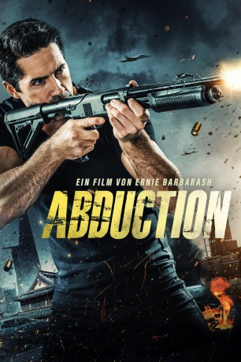

#12135 Abduction
 
 IMDB-Wertung: 5.9 / 10
IMDB-Wertung: 5.9 / 10  Metascore: 0
Metascore: 0 
Quinn (Scott Adkins) findet sich plötzlich irgendwo in Asien wieder. Er kann sich an nichts erinnern, außer dass seine Tochter entführt wurde. Auch Connor (Andy On), entdeckt, dass seine Frau auf mysteriöse Weise verschwunden ist. Die beiden ungleichen Männer erkennen, dass sie ihrem Schicksal nur gemeinsam die Stirn bieten können. Nach einer Reihe ungewöhnlicher Ereignisse und Begegnungen decken Quinn und Connor eine Verschwörung durch Außerirdische auf. Mit Hilfe eines Psychiaters und eines exzentrischen Wissenschaftlers stellen sich die beiden Männer der Bedrohung, um die Menschheit vor dem Verderben zu bewahren.
Jahr: 2019
Dauer: 97 Minuten
FSK: 18
Land: China Studio: Koch MediaTonspuren: DTS - ,
Untertitel: Deutsch,
Auflösung: 1080p (1920x1080) Größe: 9687 MB
Genre: Action, Thriller, Horror, Sci-Fi
Regisseur: Ernie Barbarash
Drehbuch:
Soundtrack: Marc Vanocur
Darsteller:
 Scott Adkins als Quinn
Scott Adkins als Quinn Andy On als Conner
Andy On als Conner- Truong Ngoc Anh als Anna
- Lily Ji als Maya
 Aki Aleong als Dao
Aki Aleong als Dao- Daniel Whyte als The Visitor
 Mike Leeder als The Cleaner
Mike Leeder als The Cleaner- Paul W. He als Sonny
 Philippe Joly als Mogilov
Philippe Joly als Mogilov Kevin Lee als Drone Giant
Kevin Lee als Drone Giant Andrew Ng als Dr. Gong
Andrew Ng als Dr. Gong Temur Mamisashvili als Andrei
Temur Mamisashvili als Andrei Jai Day als Viktor
Jai Day als Viktor- Harry Du Young als Interviewer
- Brahim Chab als Yuri
- Michael Darrow als Visitor
- Tom Caserto als Drone Elwood
- Semiquaver Iafeta als Drone Jake
- Henry Luk als Senior Bodyguard
- Adam Ren Yuchen als Bodyguard
- Marcus Guilhem als
- Myra Mala als Drone Girl
- Bassem Khayati als Russian Mafia
- J. Brennen Mathues als Slovak Gangster
Datei: X:\FSK18-Eastern\Abduction (2019, FSK18, 1920x1080).mkv seit 24.12.2019
Festplatte: Gemischt-01+Anime
 Es gibt insgesamt 102 Filme in der Gruppe 'FSK18-Eastern'
Es gibt insgesamt 102 Filme in der Gruppe 'FSK18-Eastern'